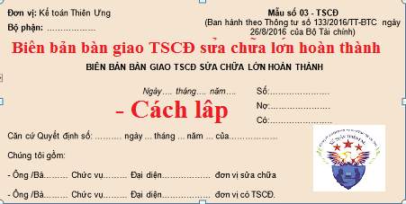

Hướng dẫn cách lập Biên bản bàn giao TSCĐ sửa chữa lớn hoàn thành theo Thông tư 133 và 200 - Mẫu 03-TSCĐ, Xác nhận việc bàn giao TSCĐ sau khi hoàn thành việc sửa chữa lớn giữa bên có TSCĐ sửa chữa và bên thực hiện việc sửa chữa. Là căn cứ ghi sổ kế toán và thanh toán chi phí sửa chữa TSCĐ.
I. Mẫu Biên bản bàn giao TSCĐ sửa chữa lớn hoàn thành:
|
Đơn vị: Kế toán Diệu Tâm Bộ phận: ……………… |
Mẫu số 03 - TSCĐ (Ban hành theo Thông tư số 133/2016/TT-BTC ngày 26/8/2016 của Bộ Tài chính) |
BIÊN BẢN BÀN GIAO TSCĐ SỬA CHỮA LỚN HOÀN THÀNH
| Ngày 15 tháng 09 năm 2026 |
Số:…………………. Nợ:…………………. Có:………………….. |
Căn cứ Quyết định số: ………. ngày 15 tháng 09 năm 2026 của………………
Chúng tôi gồm:
- Ông /Bà……… Chức vụ……… Đại diện……………… đơn vị sửa chữa
- Ông /Bà……… Chức vụ……… Đại diện……………… đơn vị có TSCĐ.
Đã kiểm nhận việc sửa chữa TSCĐ như sau:
- Tên, ký mã hiệu, quy cách (cấp hạng) TSCĐ………………………………
- Số hiệu TSCĐ ……………………….. Số thẻ TSCĐ: ………………………
- Bộ phận quản lý, sử dụng: ………………………………………
- Thời gian sửa chữa từ ngày… tháng… năm… đến ngày… tháng 09 năm 2026
Các bộ phận sửa chữa gồm có:
| Tên bộ phận sửa chữa | Nội dung (mức độ) công việc sửa chữa | Giá dự toán | Chi phí thực tế | Kết quả kiểm tra |
| A | B | 1 | 2 | 3 |
|
|
||||
| Cộng |
…………………………………………………………………………….
|
Kế toán trưởng (Ký, họ tên) |
Đại diện đơn vị nhận (Ký, họ tên) |
Đại diện đơn vị giao (Ký, họ tên) |
II. Cách lập Biên bản bàn giao TSCĐ sửa chữa lớn hoàn thành:
1. Mục đích:
- Xác nhận việc bàn giao TSCĐ sau khi hoàn thành việc sửa chữa lớn giữa bên có TSCĐ sửa chữa và bên thực hiện việc sửa chữa. Là căn cứ ghi sổ kế toán và thanh toán chi phí sửa chữa TSCĐ.
Xem thêm: Hạch toán chi phí sửa chữa TSCĐ
2. Phương pháp và trách nhiệm ghi
Góc trên bên trái của Biên bản bàn giao TSCĐ sửa chữa lớn hoàn thành ghi rõ tên đơn vị (hoặc đóng dấu đơn vị), bộ phận sử dụng. Khi có TSCĐ sửa chữa lớn hoàn thành phải tiến hành lập Ban giao nhận gồm đại diện bên thực hiện việc sửa chữa và đại diện bên có TSCĐ sửa chữa.
Biên bản bàn giao TSCĐ sửa chữa lớn hoàn thành gồm 2 phần chính:
1 - Ghi tên, ký hiệu, số hiệu TSCĐ sửa chữa.
Nơi quản lý sử dụng TSCĐ và ghi rõ thời gian bắt đầu sửa chữa và hoàn thành việc sửa chữa TSCĐ.
2 - Các bộ phận sửa chữa.
Cột A: Ghi rõ tên của bộ phận cần phải sửa chữa của TSCĐ.
Cột B: Ghi nội dung (Mức độ) của công việc sửa chữa như: Thay thế mới hoặc sửa chữa, tân trang lại v.v...
Cột 1: Ghi giá dự toán (Giá kế hoạch) (Đối với trường hợp đơn vị tự làm) hoặc giá hợp đồng hai bên đã thỏa thuận (Đối với trường hợp thuê ngoài) của từng bộ phận cần sửa chữa.
Cột 2: Ghi số chi phí thực tế đã chi cho từng bộ phận sửa chữa (Đối với trường hợp đơn vị tự sửa chữa).
Đối với trường hợp thuê ngoài sửa chữa thì chỉ ghi vào cột này khi có sự thay đổi về giá cả (So với giá ghi theo hợp đồng) phát sinh trong quá trình sửa chữa được bên có TSCĐ sửa chữa chấp nhận thanh toán.
Cột 3: Ghi rõ kết quả kiểm tra của từng bộ phận sau khi đã sửa chữa xong.
- Kết luận: Ghi ý kiến nhận xét tổng thể về việc sửa chữa lớn TSCĐ của Hội đồng giao nhận.
Biên bản giao nhận TSCĐ sửa chữa lớn hoàn thành lập thành 2 bản, đại diện đơn vị hai bên giao, nhận cùng ký và mỗi bên giữ một bản, sau đó chuyển cho kế toán trưởng của đơn vị có TSCĐ sửa chữa, soát xét xong lưu tại phòng kế toán.
Xem thêm: Mẫu biên bản kiểm kê TSCĐ
----------------------------------------------------------------
----------------------------------------------------------------
